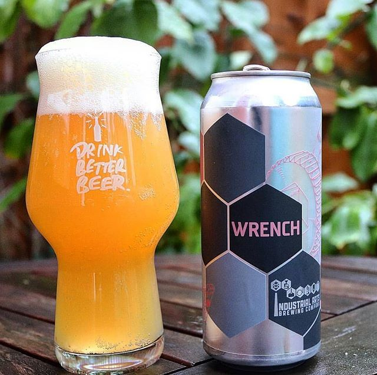

HOME
IPAs
Wrench IPA
Industrial Arts Brewing Co.
A pithy explosion of aroma and flavor, beyond hazy, and loaded with Mosaic and Citra to the point of stickiness. 7.1% ABV
Embodying the Industrial Arts, Industrial Arts Brewing are compelled to take all of the parts and pieces before us and use experiences and tools to make them into something greater than their sum. Located in Hudson Valley, NY, they focus on the industriousness, creativity and kindness of humans and making sure thats what thier beers and team is made of.
Check out their site HERE 